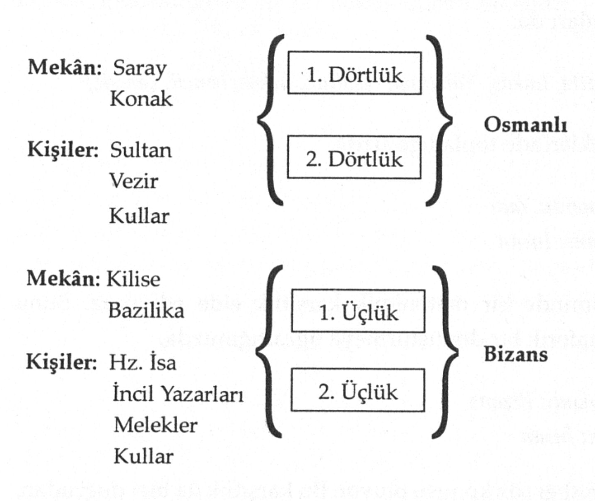

1509 DEPREMİ
Bir Zaman vardı ki zamanlar içinde,
Kanatları turuncu bir kuşa benzer,
Üsküdar’ı seyrederdim sarsıldı yer,
Devrildi penceremden kanlar içinde.
Yandı gülüm üç yüz atlı vezir kulum
Mustafa’nın konağında, cumba, revak,
Düştü nakış, indi pul pul altın varak,
Taş taşa dargın, yıkıldı İstanbul’um.
Ve dev suretler göründü, Matta, Lukas,
Yohanna ve melekler, dökülmüş Bizans
Duvarlarında, çifte kartal ve İncil,
Baktılar mavimsi göklerinden bencil,
Baktılar haçlarla korkunç, titreyerek,
Çaresiz kullarıma, yalnız ve ürkek.
Oktay Rıfat’ın 1509 Depremi, adından da anlaşılacağı gibi, tarihsel bir olayla, ‘Küçük Kıyamet’ adıyla bilinen 10 Eylül 1509’daki büyük depremle ilişkilidir. İsmail Hakkı Uzunçarşılı’nın anlatımıyla{26}, ‘915 Rebiulâhırımn 25. salı günü gecesi (Uzunçarşılı, tarihi, Ί409 Ağustos’ diye veriyor!) Memalik-i Rum denilen Amasya, Tokat, Sivas, Çorum ve havalisinde başlayıp kırk beş gün şiddetle devam eden depremde halk iki ay dışarıda çadır ve örtü altında kal[mış], [a]ynı şiddetle bu deprem İstanbul ve Edirne’de de ol[muştur].’ Uzunçarşılı’nın belirttiğine göre, ‘İstanbul depreminde yüz dokuz mescid, bin yetmiş ev harap olduktan başka halktan beş bin kişi telef ol [muştur].’ Uzunçarşılı ‘Küçük Kıyamet’in yaptığı yıkımları betimlemeyi sürdürüyor, - şöyle: "Eğrikapı’dan Yedikule’ye kadar olan üç kat İstanbul suru yıkıldığı gibi Yedikule’den de başlayıp deniz kenarında İshakpaşa semti kapısına kadar harap oldu. Bunlardan başka Fatih Camii’nin kubbesi ve direklerinin başları çatladığı gibi imaret, hastahane ve Sahn medreselerinden bazılarının ve diğer bazı medreselerin de kubbeleri yıkıldı. Fatih tarafında Karaman Mahallesi baştanbaşa harap oldu. Sultan Bayezid Camii’nin kubbesi dağıldı ve Hadım Ali Paşa Camii’nin (Divanyolu’ndaki Atik Ali Paşa Camii) kubbesi düştüğü gibi Atmeydanı’ndaki sütunlarından altı tanesi devrildi. Yeni Sarayın (Topkapı Sarayı) deniz tarafı yer yer harap oldu.
Sultan Bayezid bu zelzele münasebetiyle Edirne’ye gittiyse de aynı sene Recebinin dokuzunda, yani İstanbul zelzelesinden on beş gün sonra da İstanbul’dakinin aynı şiddetle orada da bir deprem oldu. Mimar Hayreddin, on beş günde padişah için Edirne’de bir çatma ahşap ev yaptı ve Bayezid orada oturdu, aynı sene Şabanının üçünde Edirne’de yine aynı şiddette deprem oldu ve Tunca taşarak üç gün geçit vermedi ve pek çok nüfus telef oldu.
İstanbul’daki yıkılan yerleri yaptırmak için yirmi evden bir kişi ve ev başına yirmi ikişer akçe takdiriyle cerahor, yani ücretli amele tedarik edildi; bu suretle Anadolu’dan otuz yedi bin ve Rumeli’den yirmi dokuz bin cerahor çıka31 nlıp üç bin kadar mimar ve dülger getirildi. Bunlardan başka yayalardan sekiz bin ve müsellem tayfasından üç bin kişiye de kireç yaktırıldı. Bu suretle devlete ait olan İstanbul ve Galata taraflarındaki yerler için 915 Zilhiccesinin on sekizinde başlayan inşaat altmış beş günde sona erdi.”
Oktay Rıfat’ın şiirinde 1509 depremi, II. Bayezid’in ağzından anlatılıyor. Şiiri, önce zaman ve mekân eksenleri doğrultusunda okuyalım: ‘Üsküdar’ı seyrederdim sarsıldı yer’ dizesi II. Bayezid’i Topkapı Sarayı’nda konumlandırıyor. Mekân, Topkapı Sarayı. ‘Bir Zaman vardı ki zamanlar içinde / Kanatları turuncu bir kuşa benzer’ dizeleri de, ‘zaman’ı günbatımı olarak saptıyor. Zamanın ‘kanatları turuncu bir kuş’a benzetilmesi, akşam güneşinin Üsküdar’a vuran ışıklarının turuncu aydınlığını imliyor olmalıdır. Şiirin ilk dizesi, ayrıca söyleyişi, masal söylemiyle ilişkilendiriyor.
‘Devrildi penceremden kanlar içinde’ dizesi, günbatımı ile kan arasındaki arketipsel bağıntıyı imliyor: Daha önce Nâzım’ın Simavne Kadısı Oğlu Şeyh Bedreddin Destanı’nda sipahilerin ‘güneşin boynunu vurup kanını göle akıt[maları]’ndan ya da ondan önce Ahmed Haşim’in ‘Ufukta bir ser-i maktuu andıran güneş’ten, dahası Apollinaire’in Zone (Bölge) şiirinde ‘boynu vuruk güneş’ten (soleil cou coupe) söz ediyor oldukları anımsanırsa, Oktay Rıfat’ın da günbatımı güneşinin ‘kanlar içinde’ devrilmesi’yle, bu arketipsel mazmunu, ‘akşam’ı imlemek için kullandığı öne sürülebilir.
‘Yandı gülüm üç yüz atlı vezir kulum / Mustafa’nın konağında, cumba, revak / Düştü nakış, indi pul pul altın varak’ betimlemesiyle bir gerçekliğe atıfta bulunuyor. Bu betimleme, II. Bayezid’in vezirlerinden Koca Mustafa Paşa’ya ve onun konağına yapılan bir göndermedir. Rıfat’ın burada ‘üç yüz atlı vezir kulum’ Mustafa’dan söz etmesinin bir arkaplanı var. N.N. Ambraseys ve C.F. Finkel’in The Seismicity of Tıırkey and Adjacent Areas, A Historical Review, 1500-1800{27} adlı çalışmalarında belirttiklerine göre (Venedikli Mario Sanuto ‘Günlükler’inde (I Diarii) görgü tanıklarından birinin) Transilvanya Voyvodası’nın oğlunun sözlerini aktarırken, Veziriazam Mustafa Paşa’nınki de içinde olmak üzere, Divan-ı Hümayun’dan üç vezirin konak halkının, deprem sırasında öldüklerini; Veziriazam Mustafa Paşa’nın konağındaki 360 atlının, atlarıyla birlikte telef olduklarını yazmıştır. Ambraseys ve Finkel, o tarihte Koca Mustafa Paşa’nın veziriazam olmadığına işaret ediyorlar.
Burada ‘yandı gülüm’ deyişi üzerinde de durulmalı. Bunun, argo bir deyiş olduğunu düşünüyorum. Türkçe’de, genellikle bir hayıflanmayı, alaycı biçimde dile getirmek için kullanılıyor. Bu deyiş, aynı zamanda Riffaterre’in hipogram diye atıfta bulunduğu teorik kavram dolayımında da ele alınabilir: Riffaterre, Semiotics of Poetry’de{28}, hipogramm ‘bir alıntı, bir slogan, bir klişe-söz, ya da konvansiyonel olarak bir araya gelmiş bir öbek’ olabileceğini söyler. Dolayısıyla ‘yandı gülüm, keten helva’ bir klişe-sözdür ve bu anlamda 1509 Depremi şiirinde bir hipogram oluşturur. Ayraç içinde belirteyim: Riffaterre için, bir hipograma gönderme yapan şiirsel im, (burada yandı gülüm), şiirin matrisinin bir varyantı, kısaca ‘metnin niyeti’nin (intentio operis) ‘olmazsa olmaz koşulu’dur.
Öte yandan, ‘yandı gülüm’ şiirin bütününe egemen olan ‘eda’yla örtüşmeyen, aykırı bir deyiş. Eski belâgatte, Tahir’ül Mevlevi’nin deyişiyle{29}, ‘eda’nın müeddâ ile yani lafzın mana, daha açığı üslûbun mevzu ile muvafık olma[ması]’ diye tanımlanan bir kullanım. Anlatılan, bir deprem ve bu depremin neden olduğu yıkımlar ve can kayıplarına hayıflanmanın ‘yandı gülüm’ deyişiyle bağdaşması (‘edanın müeddâ ile muvafık olması’) söz konusu değil. Oktay Rifat, o dizede ‘gülüm’le ‘kulum’ arasındaki ses uyumundan yararlanmak için bunu yapmış olabilir, ama şiirin edasına uygun düşmüyor.
‘Düştü nakış indi pul pul altın varak / Taş taşa dargın, yıkıldı İstanbul’um’ dizeleri, ‘Küçük Kıyamet’in neden olduğu yıkımları betimliyor. ‘Düştü nakış, indi pul pul altın varak’, dizesi, Topkapı Sarayı’ndaki yıkıntıları imlerken, ‘Taş taşa dargın, yıkıldı İstanbul’um’ dizesiyle betimleme, saraydan kente doğru genişleyen bir yıkım görüntüsüne açılıyor.
‘Sonnet’ biçiminde yazılmış olan 1509 Depremi’nin son altı dizesi, bir Bizans kilisesinin (ya da kilise ve bazilikalarının) deprem-sonrası betimlemesidir. Dolayısıyla şiirin kente açılışı, saraydan ya da konaktan bazilika ya da kiliseye geçiş doğrultusundadır. Ambraseys ve Finkel, yayımladıkları bir taslak haritada, 10 Eylül 1509 günü, İstanbul’da depremden etkilenen anıtsal yapılan göstermişlerdir. Bu haritada, deprem dolayısıyla hasar gören üç kilise ve bazilika var: Topkapı Sarayı Bazilikası, Ayasofya ve Hagios Georgios Manastır ve Kilisesi. Bu bazilika ve kiliselerdeki Hristiyan uluları tasvirlerinin bulunduğu fresk ve mozaiklerin üzerlerinin, Fetih’ten sonra kapatılmış olduğunu biliyoruz. Büyük olasılıkla Oktay Rifat, deprem sırasında sıvaların dökülmüş olmasıyla bu tasvirlerin meydana çıkmış olmasına gönderme yapıyor. Ayraç içinde belirteyim: Topkapı Sarayı ve çevresinin Bizans devri arkeolojisi üzerinde çalışmalar yapan Hülya Tezcan’ın Topkapı Sarayı ve Çevresinin Bizans Devri Arkeolojisi adlı kitabından{30}, adı geçen kilise ve bazilikalardan bugüne herhangi bir fresk ya da mozaiğin kalmadığını öğreniyoruz.
Görülüyor: Oktay Rifat, 1509 Depremi şiirinin ilk sekiz dizesini Osmanlı’ya, son altı dizesini de Bizans’a ait olan mekânlarla ilişkilendirmiştir. Osmanlı ile Bizans arasında, ‘sonnet’nin iki dörtlüğünün Osmanlı’ya, son iki üçlüğünün de Bizans’a ayrılmış olması bağlamında bir konumlandırma söz konusu. Osmanlı’ya ait mekân, saray ve konak; Bizans’a ait mekânlarsa bazilika ve kilisedir. Dahası, Osmanlı’ya (saray, konak) ilişkin bölümlerde, II. Bayezid (anlatıcı özne) ve Vezir Mustafa Paşa, kısaca Sultan ve kulları ile ‘kulların kulları’ndan (‘üç yüz atlı’) söz edilirken; Bizans’a (bazilika, kilise) ilişkin bölümlerde de, anlatıcı özne’nin değiştiğini; Matta, Luka, Yuhanna, İncil ve meleklerden oluşan betimleme öbeğinden yola çıkarak, son iki üçlükte ‘anlatıcı özne’nin, Hz. İsa olduğunu varsayabiliriz. Nedeni şu: Matta, Luka, Yuhanna, İncil ve melekler metonimik betimleme öbeğine, ilk sekiz dizedeki anlatıcı özneyi, II. Bayezid’i, eklemek, onun, öbeğin içinde aykırı durmasına yol açacak; buna karşılık, bağlamı Hristiyanlık olan öbeğe Hz. İsa’yı eklemek, öbeğin türdeşliğini bozmayacaktır.
Bir olasılık da, bu öbeğin türdeşliğini bozmadan ona Bizans’ın simgesi olan ‘çifte kartal’ı eklemek yoluyla, öbeğin bağlamını Hristiyanlık yerine Bizans’a kaydırmak, dolayısıyla ‘anlatıcı özne’yi Bizans imparatoru olarak sabitlemektir.
Bu incelemede Bizans imparatoru yerine Hz. İsa’nın ‘anlatıcı özne’ olarak seçilmesi, söz konusu betimleme öbeğinde Hristiyanlığa ilişkin öğelerin, Bizans’a ilişkin öğelerden nicelik bakımından fazla oluşundan dolayıdır. Bizans’a gönderme yapan bir tek öğeden (‘çifte kartal’) söz edilebilirken, Hristiyanlığa göndermede bulunan öğeler (Matta, Luka, Yuhanna, İncil, melekler) daha fazladır.
Osmanlı’ya ilişkin bölümdeki Vezir Mustafa Paşa’ya karşılık, bu bölümde İncil’leri yazanlar (Matta, Lukas ve Yuhanna) ve melekler yer alıyor. Yine birinci ya da Osmanlı’ya ilişkin bölümdeki ‘kulların kulları’nı, bu bölümde ‘kullar’ karşılıyor. Dolayısıyla şiirin, ‘bakışımlı’ bir biçimde örgütlendiğini söylemek, bana göre elbet, olanaklı görünüyor:

1509 Depremi’nde Osmanlı ile Bizans’ın ‘bakışımlı’ bir biçimde örgütlenmiş olmalarının ne anlamı var?
Bu örgütlenmenin, şiirin matrisine ilişkin kışkırtıcı içermeleri olduğunu düşünüyorum. Daha ilk okuyuşta belli olan, şiirin Osmanlı’ya ilişkin 1. ve 2. dörtlüklerinde, mekâna ve yapıya (saraya, konağa) ilişkin sözcüklerin öne çıktığıdır. Riffaterre’in deyişiyle, birden çok ‘betimleme öbeği’ oluşturacak kertede yoğunlukla geçen bu sözcükleri,
{pencere, cumba, revak), {nakış, varak}, {taş, yer}
öbeklerinde toplayabiliriz.
Buna karşılık, Bizans’a ilişkin 1. ve 2. üçlüklerde insana ve insanın ruh durumuna ilişkin sözcükler öne çıkıyor. Bunları da,
{Matta, Lukas, Yuhanna}, {yalnız, ürkek, bencil, çaresiz}
öbeklerinde topladığımızda,
Osmanlı: Yapı
Bizans: İnsan
biçiminde bir metonimik karşıtlık elde ediyoruz. Bunu metaforik bir dönüştürmeye uğrattığımızda,
Osmanlı: Bizans
Yapı: İnsan
karşıtlığı söz konusu oluyor. Bu karşıtlık da bizi doğrudan, 1509 Depremi’nin matrisine götürecektir. Matris, ‘Osmanlı insana değer vermez’dir. (Burada bir ayraç açarak, matrisi, ‘Bizans insana değer verir’, ‘Osmanlı eşyaya değer verir’; ya da ‘Bizans eşyaya değer vermez’ biçiminde de öne sürebiliriz. Osmanlı insana değer vermez’i matris olarak sabitlememizin nedeni, şiirin Osmanlı’ya ilişkin bölümünün, Bizans’a ilişkin bölümden, dize sayısı bakımından daha fazla olmasıdır.) Bu durumda, ‘yandı gülüm’ün, şiirin ‘eda’sıyla niçin bağdaştırılamıyor olduğunu da anlamlandırmak mümkün olabiliyor: ‘Yandı gülüm’, şiirde, ‘üç yüz atlı vezir kulum’ Mustafa bağlamında dile getirilmiştir. Dolayısıyla, Sultan II. Bayezid’in, Vezir Mustafa Paşa’nın 300 atlısının ölümünden, alaycı bir hayıflanmayla söz ediyor olmasını, matrisi konsolide eden bir durum olarak değerlendirmek gerekecektir.
Oktay Rıfat’ın 1509 Depremi, tarihle şiir arasında kurulabilecek en yetkin ilişkiyi (öteki ‘tarihsel’ konulu şiirleriyle birlikte) gerçekleştiren bir şiir olarak düşünülmelidir.